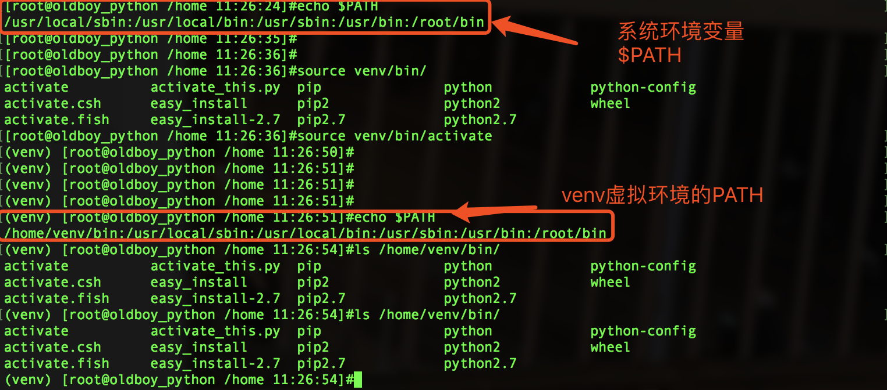

在使用 Python 开发的过程中，工程一多，难免会碰到不同的工程依赖不同版本的库的问题；
亦或者是在开发过程中不想让物理环境里充斥各种各样的库，引发未来的依赖灾难。
此时，我们需要对于不同的工程使用不同的虚拟环境来保持开发环境以及宿主环境的清洁。
这里，就要隆重介绍 virtualenv，一个可以帮助我们管理不同 Python 环境的绝好工具。
virtualenv 可以在系统中建立多个不同并且相互不干扰的虚拟环境。
#指定清华源下载pip的包
pip3 install -i https://pypi.tuna.tsinghua.edu.cn/simple virtualenv
#升级pip工具
pip3 install --upgrade pip1.安装virtualenv
pip3 install virtualenv
2.创建目录
mkdir Myproject
cd Myproject
3.创建独立运行环境-命名
virtualenv --no-site-packages --python=python3 venv#得到独立第三方包的环境，并且指定解释器是python3
4.进入虚拟环境
source venv/bin/activate#此时进入虚拟环境(venv)Myproject
5.安装第三方包
(venv)Myproject: pip3 install django==1.9.8
#此时pip的包都会安装到venv环境下，venv是针对Myproject创建的
6.退出venv环境
deactivate命令
7.
virtualenv是如何创建“独立”的Python运行环境的呢？原理很简单，就是把系统Python复制一份到virtualenv的环境，用命令source venv/bin/activate进入一个virtualenv环境时，virtualenv会修改相关环境变量，让命令python和pip均指向当前的virtualenv环境。1.假设我们在本地开发环境，准备好了项目+依赖包环境
2.现在需要将项目上传至服务器，上线发布
3.那么就要保证服务器的python环境一致性解决方案：
1.通过命令保证环境的一致性，导出当前python环境的包
pip3 freeze > requirements.txt
这将会创建一个 requirements.txt 文件，其中包含了当前环境中所有包及 各自的版本的简单列表。
可以使用 “pip list”在不产生requirements文件的情况下， 查看已安装包的列表。
2.上传至服务器后，在服务器下创建virtualenv，在venv中导入项目所需的模块依赖
pip3 install -r requirements.txtvirtualenv 的一个最大的缺点就是：
每次开启虚拟环境之前要去虚拟环境所在目录下的 bin 目录下 source 一下 activate，这就需要我们记住每个虚拟环境所在的目录。
并且还有可能你忘记了虚拟环境放在哪。。。
pip3 install virtualenvwrapper把下面两行代码添加到 ~/.bashrc文件中
打开文件
vim ~/.bashrc
写入以下两行代码
export WORKON_HOME=~/Envs #设置virtualenv的统一管理目录
export VIRTUALENVWRAPPER_VIRTUALENV_ARGS='--no-site-packages' #添加virtualenvwrapper的参数，生成干净隔绝的环境
export VIRTUALENVWRAPPER_PYTHON=/opt/python347/bin/python3 #指定python解释器
source /opt/python34/bin/virtualenvwrapper.sh #执行virtualenvwrapper安装脚本
读取文件，使得生效，此时已经可以使用virtalenvwrapper
source ~/.bashrc创建一个虚拟环境：
$ mkvirtualenv my_django115
这会在 ~/Envs 中创建 my_django115 文件夹。
在虚拟环境上工作：激活虚拟环境my_django115
$ workon my_django115
再创建一个新的虚拟环境
$ mkvirtualenv my_django2
virtualenvwrapper 提供环境名字的tab补全功能。
当有很多环境， 并且很难记住它们的名字时，这就显得很有用。
workon还可以任意停止你当前的环境，可以在多个虚拟环境中来回切换
workon django1.15
workon django2.0
也可以手动停止虚拟环境
deactivate
删除虚拟环境，需要先退出虚拟环境
rmvirtualenv my_django115lsvirtualenv
列举所有的环境。
cdvirtualenv
导航到当前激活的虚拟环境的目录中，比如说这样您就能够浏览它的 site-packages 。
cdsitepackages
和上面的类似，但是是直接进入到 site-packages 目录中。
lssitepackages
显示 site-packages 目录中的内容。
完整官网介绍：https://virtualenvwrapper.readthedocs.io/en/latest/command_ref.html